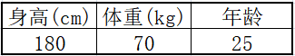
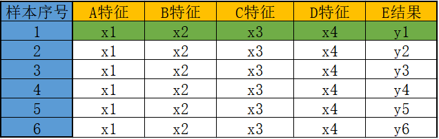
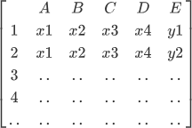
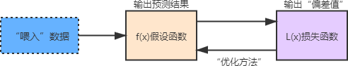
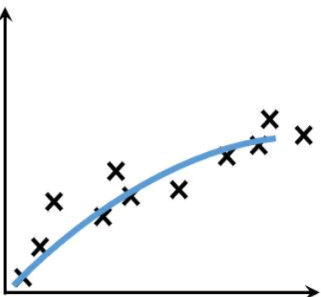
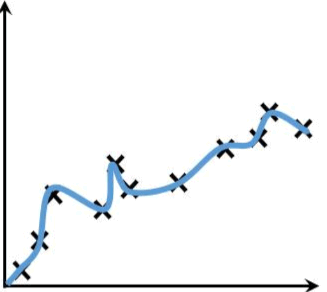
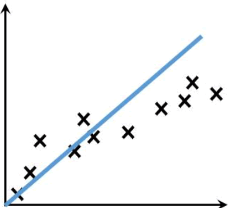
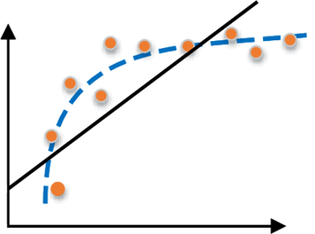

机器学习常用术语
机器学习是一门专业性很强的技术，它大量地应用了数学、统计学上的知识，因此总会有一些蹩脚的词汇，这些词汇就像“拦路虎”一样阻碍着我们前进，甚至把我们吓跑。因此认识，并理解这些词汇是首当其冲的任务。本节将介绍机器学习中常用的基本概念，为后续的知识学习打下坚实的基础。
模型这一词语将会贯穿整个教程的始末，它是机器学习中的核心概念。你可以把它看做一个“魔法盒”，你向它许愿（输入数据），它就会帮你实现愿望（输出预测结果）。整个机器学习的过程都将围绕模型展开，训练出一个最优质的“魔法盒”，它可以尽量精准的实现你许的“愿望”，这就是机器学习的目标。
第一个常用术语就是“向量”，向量是机器学习的关键术语。向量在线性代数中有着严格的定义。向量也称欧几里得向量、几何向量、矢量，指具有大小和方向的量。您可以形象地把它的理解为带箭头的线段。箭头所指：代表向量的方向；线段长度：代表向量的大小。与向量对应的量叫做数量（物理学中称标量），数量只有大小，没有方向。
在机器学习中，模型算法的运算均基于线性代数运算法则，比如行列式、矩阵运算、线性方程等等。其实对于这些运算法则学习起来并不难，它们都有着一定运算规则，只需套用即可，因此你也不必彷徨，可参考向量运算法则。向量的计算可采用 NmuPy 来实现，如下所示：
假设函数和损失函数是机器学习中的两个概念，它并非某个模块下的函数方法，而是我们根据实际应用场景确定的一种函数形式，就像你解决数学的应用题目一样，根据题意写出解决问题的方程组。下面分别来看一下它们的含义。
举一个简单的例子，比如你训练一个识别狗狗照片的模型，如果你只用金毛犬的照片训练，那么该模型就只吸纳了金毛狗的相关特征，此时让训练好的模型识别一只“泰迪犬”，那么结果可想而知，该模型会认为“泰迪”不是一条狗。如下图所示：
造成欠拟合的主要原因是由于没有选择好合适的特征值，比如使用一次函数（y=kx+b）去拟合具有对数特征的散落点（y=log2x），示例图如下所示：
欠拟合和过拟合是机器学习中会遇到的问题，这两种情况都不是我期望看到的，因此要避免，关于如何处理类似问题，在后续内容中还会陆续讲解，本节只需要大家熟悉并理解常见的机器学习术语和一些概念即可。
机器学习术语
1) 模型模型这一词语将会贯穿整个教程的始末，它是机器学习中的核心概念。你可以把它看做一个“魔法盒”，你向它许愿（输入数据），它就会帮你实现愿望（输出预测结果）。整个机器学习的过程都将围绕模型展开，训练出一个最优质的“魔法盒”，它可以尽量精准的实现你许的“愿望”，这就是机器学习的目标。
2) 数据集
数据集，从字面意思很容易理解，它表示一个承载数据的集合，如果说“模型”是“魔法盒”的话，那么数据集就是负责给它充能的“能量电池”，简单地说，如果缺少了数据集，那么模型就没有存在的意义了。数据集可划分为“训练集”和“测试集”，它们分别在机器学习的“训练阶段”和“预测输出阶段”起着重要的作用。3) 样本&特征
样本指的是数据集中的数据，一条数据被称为“一个样本”，通常情况下，样本会包含多个特征值用来描述数据，比如现在有一组描述人形态的数据“180 70 25”如果单看数据你会非常茫然，但是用“特征”描述后就会变得容易理解，如下所示：

图1：样本&特征
由上图可知数据集的构成是“一行一样本，一列一特征”。特征值也可以理解为数据的相关性，每一列的数据都与这一列的特征值相关。图1：样本&特征
4) 向量
任何一门算法都会涉及到许多数学上的术语或者公式。在本教程写作的过程中也会涉及到很多数学公式，以及专业的术语，在这里我们先对常用的基本术语做一下简单讲解。第一个常用术语就是“向量”，向量是机器学习的关键术语。向量在线性代数中有着严格的定义。向量也称欧几里得向量、几何向量、矢量，指具有大小和方向的量。您可以形象地把它的理解为带箭头的线段。箭头所指：代表向量的方向；线段长度：代表向量的大小。与向量对应的量叫做数量（物理学中称标量），数量只有大小，没有方向。
在机器学习中，模型算法的运算均基于线性代数运算法则，比如行列式、矩阵运算、线性方程等等。其实对于这些运算法则学习起来并不难，它们都有着一定运算规则，只需套用即可，因此你也不必彷徨，可参考向量运算法则。向量的计算可采用 NmuPy 来实现，如下所示：
import numpy as np #构建向量数组 a=np.array([-1,2]) b=np.array([3,-1]) #加法 a_b=a+b #数乘 a2=a*2 b3=b*(-3) #减法 b_a=a-b print(a_b,a2,b3,b_a)输出结果：
[2 1] [-2 4] [-9 3] [-4 3]简而言之，数据集中的每一个样本都是一条具有向量形式的数据。
5) 矩阵
矩阵也是一个常用的数学术语，你可以把矩阵看成由向量组成的二维数组，数据集就是以二维矩阵的形式存储数据的，你可以把它形象的理解为电子表格“一行一样本，一列一特征”表现形式如下：

图2：矩阵表格
如果用二维矩阵的表示的话，其格式如下所示：图2：矩阵表格

假设函数&损失函数
机器学习在构建模型的过程中会应用大量的数学函数，正因为如此很多初学者对此产生畏惧，那么它们真会有这么可怕吗？其实我认为至少没有你想的那么可怕。从编程角度来看，这些函数就相当于模块中内置好的方法，只需要调用相应的方法就可以达成想要的目的。而要说难点，首先你要理解你的应用场景，然后根据实际的场景去调用相应的方法，这才是你更应该关注的问题。假设函数和损失函数是机器学习中的两个概念，它并非某个模块下的函数方法，而是我们根据实际应用场景确定的一种函数形式，就像你解决数学的应用题目一样，根据题意写出解决问题的方程组。下面分别来看一下它们的含义。
1) 假设函数
假设函数（Hypothesis Function）可表述为y=f(x)其中 x 表示输入数据，而 y 表示输出的预测结果，而这个结果需要不断的优化才会达到预期的结果，否则会与实际值偏差较大。
2) 损失函数
损失函数（Loss Function）又叫目标函数，简写为 L(x)，这里的 x 是假设函数得出的预测结果“y”，如果 L(x) 的返回值越大就表示预测结果与实际偏差越大，越小则证明预测值越来越“逼近”真实值，这才是机器学习最终的目的。因此损失函数就像一个度量尺，让你知道“假设函数”预测结果的优劣，从而做出相应的优化策略。3) 优化方法
“优化方法”可以理解为假设函数和损失函数之间的沟通桥梁。通过 L(x) 可以得知假设函数输出的预测结果与实际值的偏差值，当该值较大时就需要对其做出相应的调整，这个调整的过程叫做“参数优化”，而如何实现优化呢？这也是机器学习过程中的难点。其实为了解决这一问题，数学家们早就给出了相应的解决方案，比如梯度下降、牛顿方与拟牛顿法、共轭梯度法等等。因此我们要做的就是理解并掌握“科学巨人”留下的理论、方法。对于优化方法的选择，我们要根据具体的应用场景来选择应用哪一种最合适，因为每一种方法都有自己的优劣势，所以只有合适的才是最好的。
上述函数的关系图如下所示：

图3：函数关系图
图3：函数关系图
拟合&过拟合&欠拟合
拟合是机器学习中的重要概念，也可以说，机器学习的研究对象就是让模型能更好的拟合数据，那到底如何理解“拟合”这个词呢？1)拟合
形象地说，“拟合”就是把平面坐标系中一系列散落的点，用一条光滑的曲线连接起来，因此拟合也被称为“曲线拟合”。拟合的曲线一般用函数进行表示，但是由于拟合曲线会存在许多种连接方式，因此就会出现多种拟合函数。通过研究、比较确定一条最佳的“曲线”也是机器学习中一个重要的任务。如下图所示，展示一条拟合曲线（蓝色曲线）：

图4：曲线拟合
图4：曲线拟合
提示：很多和数学相关的编程语言都内置计算拟合曲线的函数，比如 MATLAB 、Python Scipy 等，在后续内容中还会介绍。
2) 过拟合
过拟合（overfitting）与是机器学习模型训练过程中经常遇到的问题，所谓过拟合，通俗来讲就是模型的泛化能力较差，也就是过拟合的模型在训练样本中表现优越，但是在验证数据以及测试数据集中表现不佳。举一个简单的例子，比如你训练一个识别狗狗照片的模型，如果你只用金毛犬的照片训练，那么该模型就只吸纳了金毛狗的相关特征，此时让训练好的模型识别一只“泰迪犬”，那么结果可想而知，该模型会认为“泰迪”不是一条狗。如下图所示：

图5：过拟合
图5：过拟合
过拟合问题在机器学习中经常原道，主要是因为训练时样本过少，特征值过多导致的，后续还会详细介绍。
3) 欠拟合
欠拟合（underfitting）恰好与过拟合相反，它指的是“曲线”不能很好的“拟合”数据。在训练和测试阶段，欠拟合模型表现均较差，无法输出理想的预测结果。如下图所示：

图6：欠拟合
图6：欠拟合
造成欠拟合的主要原因是由于没有选择好合适的特征值，比如使用一次函数（y=kx+b）去拟合具有对数特征的散落点（y=log2x），示例图如下所示：

图7：欠拟合示例图
图7：欠拟合示例图
欠拟合和过拟合是机器学习中会遇到的问题，这两种情况都不是我期望看到的，因此要避免，关于如何处理类似问题，在后续内容中还会陆续讲解，本节只需要大家熟悉并理解常见的机器学习术语和一些概念即可。
关注公众号「站长严长生」，在手机上阅读所有教程，随时随地都能学习。内含一款搜索神器，免费下载全网书籍和视频。

微信扫码关注公众号